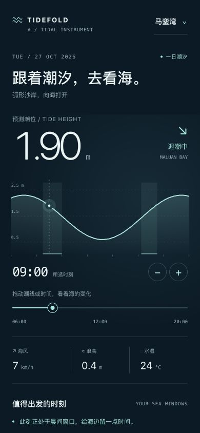
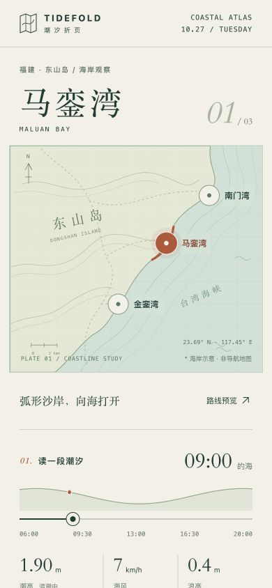
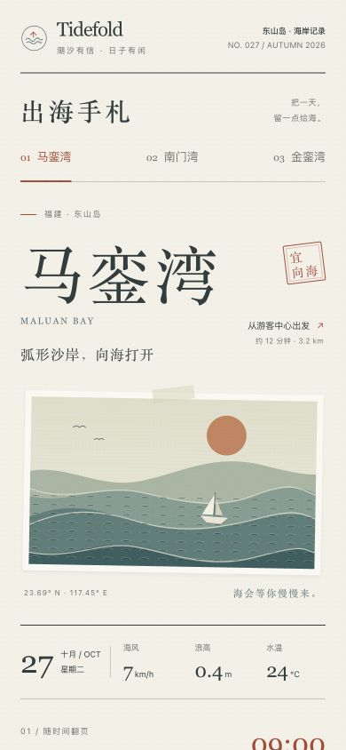

QS / DESIGN
TIDEFOLD · INTERACTIVE STUDIES · 0.6.0
一次看海，三种读法。
相同的海湾、潮汐与出发任务。
分别从时间、地点和当日计划开始，点击封面亲自体验。

01 / INSTRUMENT
潮汐仪表
拖动潮线，读数与窗口随时间变化。
把出发时刻握在手里。

02 / ATLAS
海岸图鉴
从地图选择海湾，再读一段潮汐。
沿着海岸，找到想去的地方。

03 / JOURNAL
出海手札
原位翻开时段，把提醒写进今天。
让一段海边时光留在日程里。